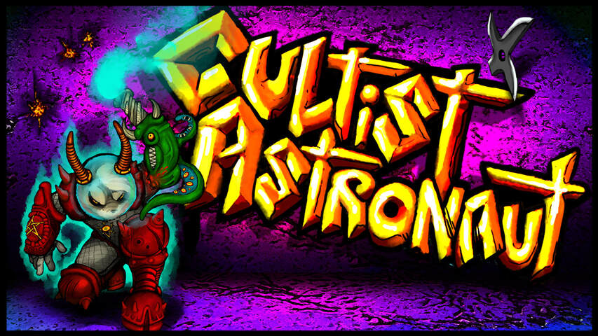
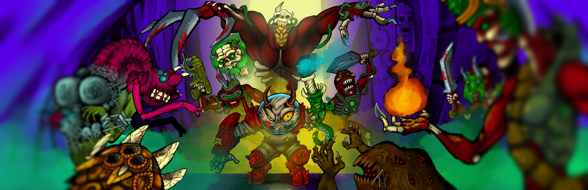
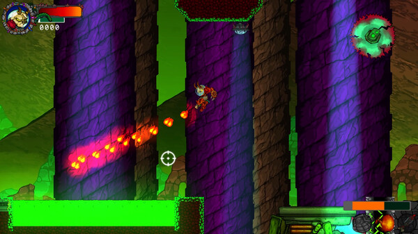

Cultist Astronaut



Description
Run and gun through a galaxy of cults and doom! This fast-paced, action platformer puts you in the hooves of a Goatling armed with an Eldritch gun and a fierce attitude towards heretics.